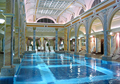
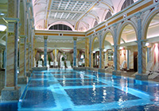

Welcome to the Xela Hotel
The original Xela perseveres after 50 years in the heart of West Xela.  The West End neighborhood has something for everyone—from theater to dining to historic sights. And the not-to-miss Rooftop Cafe is a great place for travelers and locals to engage over drinks, food, The West End neighborhood has something for everyone—from theater to dining to historic sights. And the not-to-miss Rooftop Cafe is a great place for travelers and locals to engage over drinks, food, The West End neighborhood has something for everyone—from theater to dining to historic sights. And the not-to-miss Rooftop Cafe is a great place for travelers and locals to engage over drinks, food, and good
The West End neighborhood has something for everyone—from theater to dining to historic sights. And the not-to-miss Rooftop Cafe is a great place for travelers and locals to engage over drinks, food, The West End neighborhood has something for everyone—from theater to dining to historic sights. And the not-to-miss Rooftop Cafe is a great place for travelers and locals to engage over drinks, food, The West End neighborhood has something for everyone—from theater to dining to historic sights. And the not-to-miss Rooftop Cafe is a great place for travelers and locals to engage over drinks, food, and good  conversation. To learn more about the Xela Hotel in the West End, The West End neighborhood has something for everyone—from theater to dining to historic sights. And the not-to-miss Rooftop Cafe is a great place for travelers and locals to engage over drinks, food, browse our website and download our handy information sheet.
conversation. To learn more about the Xela Hotel in the West End, The West End neighborhood has something for everyone—from theater to dining to historic sights. And the not-to-miss Rooftop Cafe is a great place for travelers and locals to engage over drinks, food, browse our website and download our handy information sheet.